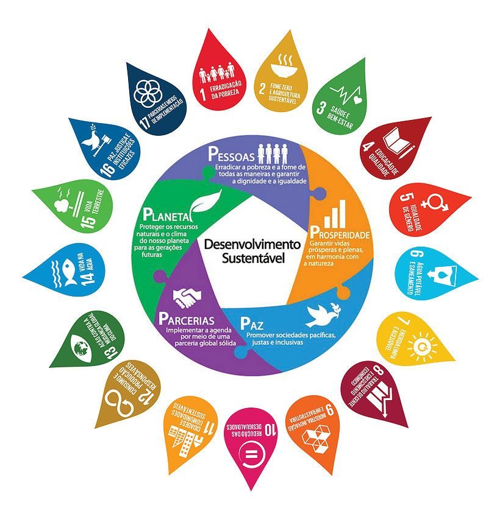
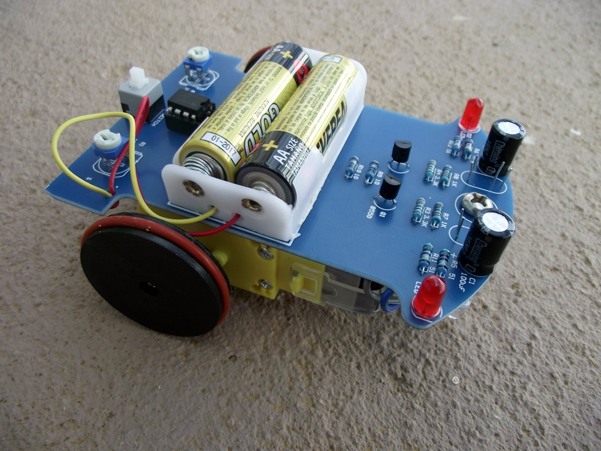
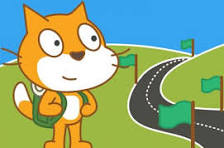

Meus Projetos

Políticas públicas e desenvolvimento sustentável
A formulação de políticas públicas são fundamentais para a promoção do desenvolvimento

Robô seguidor de linha
Os robôs seguidores de linha são equipados com sensores de infravermelho capzes de detectar a relfexão de infravermelho difrenciando as cores branco e preto

Animações com listas
Es listas servem para armazenar diferentes valores, ao utilizar uma lista podemos criar uma animação com diferentes interaçõs com a programação em blocos, além de outras diversas funcionalidades.